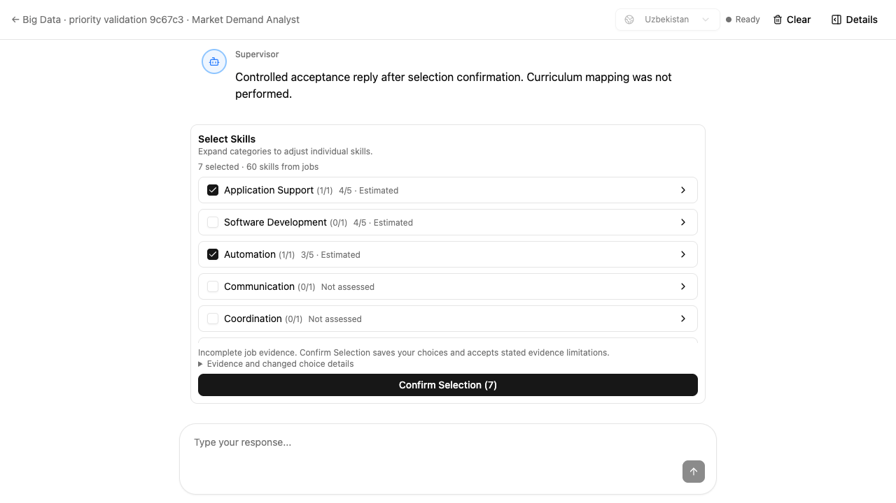
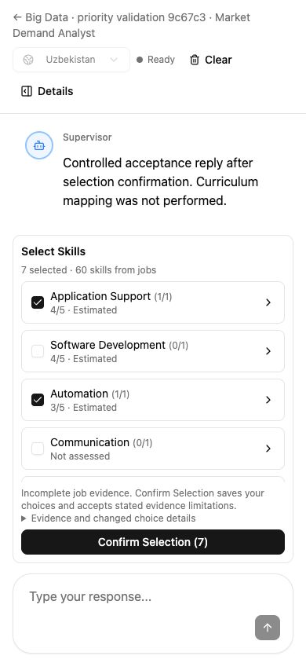
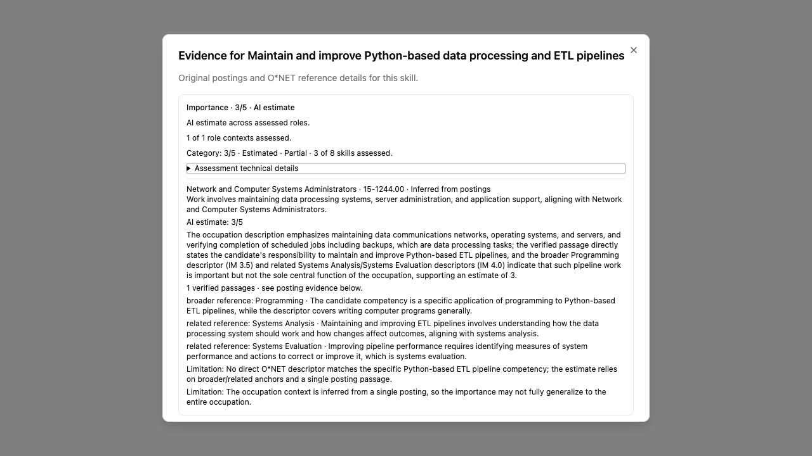

Skill importance, in the same flow.
The analyst works automatically before skill selection. Teachers keep the same four decisions, category choices, individual exclusions and original job links.
Real Big Data check: 38 saved material records, 60 job-backed skills and 21 retained postings. The bounded run scored 11 of 60 skills in 60.15 seconds; the other 49 are explicitly unassessed. All 60 remain available to the teacher.
The original course and its choices were unchanged. Browser selection tests used a separate copy.

Fresh-context feedback
Approved after fixes · 7.5/10 for simplicity
Fresh-context headless testing passed with the same controls and saved choices. Rounding and job-group explanations are fixed; labels are easier to read. The reviewer still noted 35 categories to scan, long evidence text and limited scoring coverage.
Read the independent review and screenshots
What changed for the teacher
- One small importance label beside a skill or category. Estimated and partial results are explicit.
- Existing inspection opens the reasoning, O*NET source records and original posting passages. Decimal display rounding matches ranking; explanations use the candidate’s actual job group.
- Category selection still allows individual exclusions. Selection changes do not move rows.
- Timeouts return the normal checklist. Refresh reads saved guidance without another model call.
Category importance averages unique skills with complete role coverage. Repeated postings do not inflate importance. O*NET Level, job frequency and student mastery are separate.
Mobile and evidence views




Verification and practical limits
| Check | Measured result |
|---|---|
| Live estimate quality | 20 cases across three occupations; all 15 targets scored, 13 within one point; all five weak controls abstained. Zero fabricated references, mislabeled estimates or invalid numeric values. |
| Big Data analysis copy | 60 / 60 outcomes; 11 scored, 49 unavailable; teacher decisions preserved. Saved analysis reused, rather than re-uploading or re-extracting materials. |
| Actual browser behavior | 1440 × 900, 1280 × 720, 390 × 844. The 36 existing checklist buttons are unchanged. Labels, ordering, original link, three O*NET references, fetched passage, keyboard focus, category choice, exclusion, confirmation and SQL reload passed. |
| Backend checks | 174 combined priority tests passed. The subsequent cancellation fix passed 49 flow/thread checks, including six new cancellation regressions. The broader core workflow gate passed 93 checks. |
| Frontend checks | Focused component/controller/stream suites passed; the final rounding, attribution and card regressions passed 48 tests. Docker lint and build passed. |
Limits: the live accuracy check holds out official general-descriptor ratings and uses synthetic responsibilities. It is not expert calibration for individual technologies. The copied Big Data run measures evidence and behavior, not accuracy against invented course scores. Curriculum mapping and publication were not exercised by this scenario.
Existing LangGraph/Pydantic warnings, the frontend lint advisory and bundle-size advisory remain. The final broad frontend run had 827 passes, the existing node:test/Vitest discovery failure and two timeouts. Both timed-out tests passed isolated reruns. A passing full suite is not claimed.
Quality receipt · Big Data receipt · Browser receipt · Original-course check
Rollout and implementation decisions
The feature remains off by default. This work is on feat/teacher-evidence-workspace; production deployment is a separate step. The tested priority model can be configured independently of the other agents:
LAB_TUTOR_MARKET_SKILL_PRIORITY_MODEL=deepseek-v4.1-flash LAB_TUTOR_MARKET_SKILL_PRIORITY_ENABLED=true
Rollback: set LAB_TUTOR_MARKET_SKILL_PRIORITY_ENABLED=false. Existing choices and student workflows remain intact.
Storage uses a separate assessment JSON document. Saves check owner, active run, revision, source fingerprint and the actual execution lease. All model work shares a 60-second budget, at most two actual calls and a 20-second per-call limit. Current batches contain at most two pairs.
Strict JSON object mode and model-specific non-thinking settings follow the provider’s JSON output and thinking mode documentation. Approved system prompts stay unchanged; the request format is version 4.
Rulings I made
- Backend and frontend implementation may run concurrently after Task 1 freezes the DTO contract, with disjoint file ownership — project AGENTS.md explicitly authorizes this split and the approved plan includes it — integration may need small follow-up changes.
- Existing workspace containers are correctly mounted, but dedicated priority containers/database will isolate tests and acceptance from running app sessions — avoid shared test resets — modest extra container resource use.
- Use strict PriorityAssociation(reference_id UUID, relation enum, rationale), started_at/updated_at/deadline_at/completed_at timestamps, server-owned posting_hashes — approved prompts require strict reference identities and stale-source protection — consumers must mirror the frozen DTOs.
- Run focused task/regression suites after each edit, then broader affected suites at integration — user AGENTS.md requires narrow relevant tests and developer instructions avoid repeated broad runs — final coordinator verification must cover cross-task risks.
- Add server-owned PriorityAssessment.references:list[OnetEvidence] default [] in Task 3, containing used validated direct/anchor rows only — approved spec requires source labels/URLs/attribution but original compact DTO omitted a transport — additive field, no change to model output. UI resolves labels/links there and uses passage count rather than raw IDs.
- Service enriches detached passage records with context_keys derived from validated group posting membership; policy validates candidate_ids plus context key for every estimated passage — original pure function signature has no contexts argument — reject estimates if metadata absent.
- Task 3 must validate raw reference rating types before permissive existing Metric DTO coercion (e.g. bool to float) — official ratings must be finite real numbers from the source — invalid rows must not become official/anchor scores.
- Reuse the configured agent model (settings.llm_agent_model) for this new analyst, shorten HumanMessage response instructions, and reduce scoring batches to two pairs — actual traces showed five/six-pair requests exceeded20s with both existing models; two-pair concise qwen3.5-plus completed ready in19.1s total — smaller batches add requests and may leave honest partial coverage on large runs. Approved SystemMessages, evidence rules,60s/20s deadlines and two-call concurrency remain unchanged. Existing config is reused; no provider/model secret or production setting is changed.
- Use strictlymapped short groupaliases onlyduringmodelcontextrequests, persistoriginal immutableIDs; add general Humanpayload rubric/associationconsistency guidance, promptversion3 — source IDs mustneverbe fuzzilyrepaired and semantic/qualitychecks mustnotbeweakened — adds transportmapping and mayrequireanotherqualityrun; no benchmark-specificexamples/expectedvaluesallowed. OriginalexactSystemMessagesandnumericpolicyunchanged. Task3originalworkerowns thisgeneralrobustnessfollowup, reviewrequired.
- Evaluationcounts everyheld-outtarget (includingabstentions) in its accuracydenominator — preventsselectivecoverageinflatinga pass — strongerthanminimumspec scored-onlyratio maykeep rolloutoffmoreconservatively. Goldratingssource-derived, notinventedreviewjudgments; specifictechnologycalibrationremainsunproven.
- Use strict JSON-object transport {results:[records]} with provider JSON mode and correct per-model non-thinking parameter; add optional priority-only model override (fallbackexistingagentmodel), prompt4 — officialAPIJSONobjectmode cannotproducebarearray(reproduced{}), DeepSeeknon-thinking uses thinking.type and directtestcompleted2.53s with0reasoningtokens; avoidschangingotheragentswhenchoosingverifiedmodel — internalwrapperandmodelconfigtestsneedupdating, butstrictDTOs,exactSystemMessages,numericpolicy,budgetsremainunchanged. Sources: https://api-docs.deepseek.com/guides/json_mode/ and https://api-docs.deepseek.com/guides/thinking_mode/ . No productionmodel/flagsettingchanged.
- Task4reviewbaseee1af8e isolatesitsverifiedsinglecommitbadd5c6, excludingconcurrentalreadyreviewedservice/UIcommits — all10Task4ownedfilechangesareinbadd5c6 andnonewerecommittedearlier — finalwholefeaturepackagewillstillstartc95b20d tocoverintegrationrisk.
- Preserve the existing feature branch/worktree without pushing, merging or deploying — current user authorized implementation and testing; integration is outside this request, and broad-suite discovery failure remains unrelated and disclosed — validated scoped behavior is delivered with rollout off by default.